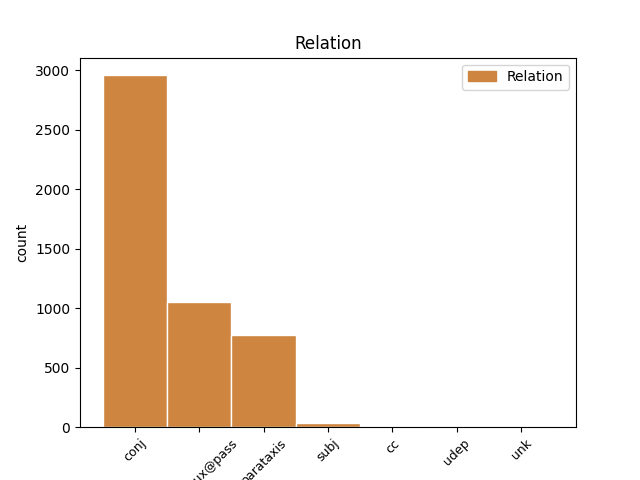
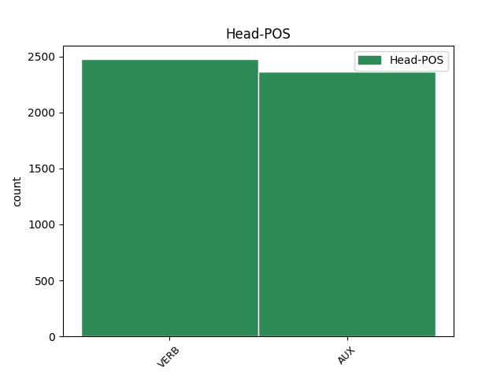
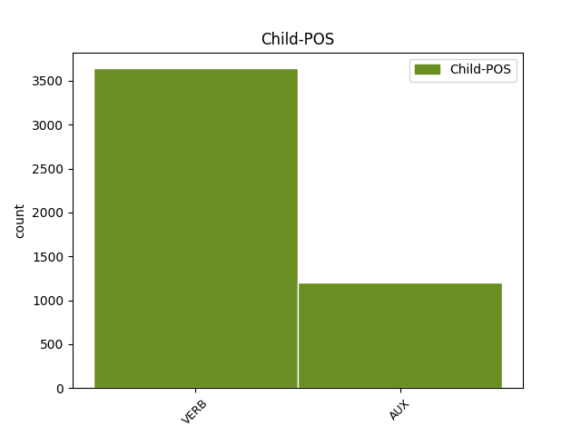

Distribution of features within this leaf



Agreement Rules sorted by frequency.
- When the dependent token is the conjunct(conj) of the head token,
1 Jazmin _ _ _ _ 0 _ _ _
2 es ser AUX _ Mood=Ind|Number=Sing|Person=3|Tense=Pres|VerbForm=Fin 0 _ _ _
3 todo _ _ _ _ 0 _ _ _
4 lo _ _ _ _ 0 _ _ _
5 contrario _ _ _ _ 0 _ _ _
6 , _ _ _ _ 0 _ _ _
7 es _ _ _ _ 0 _ _ _
8 tímida _ _ _ _ 0 _ _ _
9 y _ _ _ _ 0 _ _ _
10 callada _ _ _ _ 0 _ _ _
11 , _ _ _ _ 0 _ _ _
12 pero _ _ _ _ 0 _ _ _
13 siempre _ _ _ _ 0 _ _ _
14 es ser AUX _ Mood=Ind|Number=Sing|Person=3|Tense=Pres|VerbForm=Fin 2 conj _ _
15 arrastrada _ _ _ _ 0 _ _ _
16 por _ _ _ _ 0 _ _ _
17 las _ _ _ _ 0 _ _ _
18 locuras _ _ _ _ 0 _ _ _
19 y _ _ _ _ 0 _ _ _
20 travesuras _ _ _ _ 0 _ _ _
21 que _ _ _ _ 0 _ _ _
22 inventa _ _ _ _ 0 _ _ _
23 Alma _ _ _ _ 0 _ _ _
24 . _ _ _ _ 0 _ _ _
1 En _ _ _ _ 0 _ _ _
2 estos _ _ _ _ 0 _ _ _
3 trabajos _ _ _ _ 0 _ _ _
4 se _ _ _ _ 0 _ _ _
5 pusieron _ _ _ _ 0 _ _ _
6 a _ _ _ _ 0 _ _ _
7 el _ _ _ _ 0 _ _ _
8 descubierto _ _ _ _ 0 _ _ _
9 25 _ _ _ _ 0 _ _ _
10 vanos _ _ _ _ 0 _ _ _
11 correspondientes _ _ _ _ 0 _ _ _
12 a _ _ _ _ 0 _ _ _
13 ventanas _ _ _ _ 0 _ _ _
14 saeteras _ _ _ _ 0 _ _ _
15 que _ _ _ _ 0 _ _ _
16 habían _ _ _ _ 0 _ _ _
17 sido ser AUX _ Gender=Masc|Number=Sing|Tense=Past|VerbForm=Part 0 _ _ _
18 tapiadas tapiado VERB _ Gender=Fem|Number=Plur|Tense=Past|VerbForm=Part 17 comp:aux@pass _ _
19 en _ _ _ _ 0 _ _ _
20 los _ _ _ _ 0 _ _ _
21 siglos _ _ _ _ 0 _ _ _
22 anteriores _ _ _ _ 0 _ _ _
23 . _ _ _ _ 0 _ _ _
1 Jazmin _ _ _ _ 0 _ _ _
2 es ser AUX _ Mood=Ind|Number=Sing|Person=3|Tense=Pres|VerbForm=Fin 0 _ _ _
3 todo _ _ _ _ 0 _ _ _
4 lo _ _ _ _ 0 _ _ _
5 contrario _ _ _ _ 0 _ _ _
6 , _ _ _ _ 0 _ _ _
7 es ser AUX _ Mood=Ind|Number=Sing|Person=3|Tense=Pres|VerbForm=Fin 2 parataxis _ _
8 tímida _ _ _ _ 0 _ _ _
9 y _ _ _ _ 0 _ _ _
10 callada _ _ _ _ 0 _ _ _
11 , _ _ _ _ 0 _ _ _
12 pero _ _ _ _ 0 _ _ _
13 siempre _ _ _ _ 0 _ _ _
14 es _ _ _ _ 0 _ _ _
15 arrastrada _ _ _ _ 0 _ _ _
16 por _ _ _ _ 0 _ _ _
17 las _ _ _ _ 0 _ _ _
18 locuras _ _ _ _ 0 _ _ _
19 y _ _ _ _ 0 _ _ _
20 travesuras _ _ _ _ 0 _ _ _
21 que _ _ _ _ 0 _ _ _
22 inventa _ _ _ _ 0 _ _ _
23 Alma _ _ _ _ 0 _ _ _
24 . _ _ _ _ 0 _ _ _
1 Así _ _ _ _ 0 _ _ _
2 , _ _ _ _ 0 _ _ _
3 entiende _ _ _ _ 0 _ _ _
4 que _ _ _ _ 0 _ _ _
5 el _ _ _ _ 0 _ _ _
6 que _ _ _ _ 0 _ _ _
7 alguien _ _ _ _ 0 _ _ _
8 haga hacer VERB _ Mood=Sub|Number=Sing|Person=3|Tense=Pres|VerbForm=Fin 21 subj _ _
9 un _ _ _ _ 0 _ _ _
10 resultado _ _ _ _ 0 _ _ _
11 extraordinario _ _ _ _ 0 _ _ _
12 -- _ _ _ _ 0 _ _ _
13 como _ _ _ _ 0 _ _ _
14 ganar _ _ _ _ 0 _ _ _
15 ocho _ _ _ _ 0 _ _ _
16 partidas _ _ _ _ 0 _ _ _
17 de _ _ _ _ 0 _ _ _
18 nueve _ _ _ _ 0 _ _ _
19 jugadas _ _ _ _ 0 _ _ _
20 -- _ _ _ _ 0 _ _ _
21 es ser AUX _ Mood=Ind|Number=Sing|Person=3|Tense=Pres|VerbForm=Fin 0 _ _ _
22 mucho _ _ _ _ 0 _ _ _
23 más _ _ _ _ 0 _ _ _
24 improbable _ _ _ _ 0 _ _ _
25 que _ _ _ _ 0 _ _ _
26 ganar _ _ _ _ 0 _ _ _
27 seis _ _ _ _ 0 _ _ _
28 partidas _ _ _ _ 0 _ _ _
29 de _ _ _ _ 0 _ _ _
30 nueve _ _ _ _ 0 _ _ _
31 , _ _ _ _ 0 _ _ _
32 aún _ _ _ _ 0 _ _ _
33 cuando _ _ _ _ 0 _ _ _
34 en _ _ _ _ 0 _ _ _
35 el _ _ _ _ 0 _ _ _
36 primer _ _ _ _ 0 _ _ _
37 caso _ _ _ _ 0 _ _ _
38 los _ _ _ _ 0 _ _ _
39 jugadores _ _ _ _ 0 _ _ _
40 fueran _ _ _ _ 0 _ _ _
41 más _ _ _ _ 0 _ _ _
42 débiles _ _ _ _ 0 _ _ _
43 . _ _ _ _ 0 _ _ _
1 Dependiendo _ _ _ _ 0 _ _ _
2 de _ _ _ _ 0 _ _ _
3 su _ _ _ _ 0 _ _ _
4 ángulo _ _ _ _ 0 _ _ _
5 de _ _ _ _ 0 _ _ _
6 avance _ _ _ _ 0 _ _ _
7 , _ _ _ _ 0 _ _ _
8 los _ _ _ _ 0 _ _ _
9 husillos _ _ _ _ 0 _ _ _
10 de _ _ _ _ 0 _ _ _
11 bolas _ _ _ _ 0 _ _ _
12 puede _ _ _ _ 0 _ _ _
13 retroceder _ _ _ _ 0 _ _ _
14 debido _ _ _ _ 0 _ _ _
15 a _ _ _ _ 0 _ _ _
16 su _ _ _ _ 0 _ _ _
17 bajo _ _ _ _ 0 _ _ _
18 rozamiento _ _ _ _ 0 _ _ _
19 interno _ _ _ _ 0 _ _ _
20 ( _ _ _ _ 0 _ _ _
21 es ser VERB _ Mood=Ind|Number=Sing|Person=3|Tense=Pres|VerbForm=Fin 29 cc _ _
22 decir _ _ _ _ 0 _ _ _
23 , _ _ _ _ 0 _ _ _
24 el _ _ _ _ 0 _ _ _
25 eje _ _ _ _ 0 _ _ _
26 de _ _ _ _ 0 _ _ _
27 el _ _ _ _ 0 _ _ _
28 husillo _ _ _ _ 0 _ _ _
29 puede poder AUX _ Mood=Ind|Number=Sing|Person=3|Tense=Pres|VerbForm=Fin 0 _ _ _
30 ser _ _ _ _ 0 _ _ _
31 accionado _ _ _ _ 0 _ _ _
32 linealmente _ _ _ _ 0 _ _ _
33 y _ _ _ _ 0 _ _ _
34 hacer _ _ _ _ 0 _ _ _
35 girar _ _ _ _ 0 _ _ _
36 la _ _ _ _ 0 _ _ _
37 tuerca _ _ _ _ 0 _ _ _
38 de _ _ _ _ 0 _ _ _
39 bola _ _ _ _ 0 _ _ _
40 ) _ _ _ _ 0 _ _ _
41 . _ _ _ _ 0 _ _ _
1 Hasta _ _ _ _ 0 _ _ _
2 1835 _ _ _ _ 0 _ _ _
3 , _ _ _ _ 0 _ _ _
4 la _ _ _ _ 0 _ _ _
5 villa _ _ _ _ 0 _ _ _
6 era _ _ _ _ 0 _ _ _
7 conocido _ _ _ _ 0 _ _ _
8 en _ _ _ _ 0 _ _ _
9 inglés _ _ _ _ 0 _ _ _
10 como _ _ _ _ 0 _ _ _
11 Pool _ _ _ _ 0 _ _ _
12 ( _ _ _ _ 0 _ _ _
13 Pantano _ _ _ _ 0 _ _ _
14 en _ _ _ _ 0 _ _ _
15 inglés _ _ _ _ 0 _ _ _
16 viejo _ _ _ _ 0 _ _ _
17 ) _ _ _ _ 0 _ _ _
18 , _ _ _ _ 0 _ _ _
19 pero _ _ _ _ 0 _ _ _
20 fue ser AUX _ Mood=Ind|Number=Sing|Person=3|Tense=Past|VerbForm=Fin 0 _ _ _
21 cambiado _ _ _ _ 0 _ _ _
22 , _ _ _ _ 0 _ _ _
23 debido deber VERB _ Gender=Masc|Number=Sing|Tense=Past|VerbForm=Part 20 udep _ _
24 a _ _ _ _ 0 _ _ _
25 la _ _ _ _ 0 _ _ _
26 villa _ _ _ _ 0 _ _ _
27 inglesa _ _ _ _ 0 _ _ _
28 de _ _ _ _ 0 _ _ _
29 Poole _ _ _ _ 0 _ _ _
30 en _ _ _ _ 0 _ _ _
31 el _ _ _ _ 0 _ _ _
32 condado _ _ _ _ 0 _ _ _
33 de _ _ _ _ 0 _ _ _
34 Dorset _ _ _ _ 0 _ _ _
35 . _ _ _ _ 0 _ _ _
1 Nacido nacido VERB _ Gender=Masc|Number=Sing|Tense=Past|VerbForm=Part 0 _ _ _
2 el _ _ _ _ 0 _ _ _
3 5 _ _ _ _ 0 _ _ _
4 de _ _ _ _ 0 _ _ _
5 enero _ _ _ _ 0 _ _ _
6 de _ _ _ _ 0 _ _ _
7 1893 _ _ _ _ 0 _ _ _
8 , _ _ _ _ 0 _ _ _
9 cuando _ _ _ _ 0 _ _ _
10 contaba _ _ _ _ 0 _ _ _
11 con _ _ _ _ 0 _ _ _
12 8 _ _ _ _ 0 _ _ _
13 años _ _ _ _ 0 _ _ _
14 falleció fallecer VERB _ Mood=Ind|Number=Sing|Person=3|Tense=Past|VerbForm=Fin 1 unk _ _
15 su _ _ _ _ 0 _ _ _
16 padre _ _ _ _ 0 _ _ _
17 , _ _ _ _ 0 _ _ _
18 Ramón _ _ _ _ 0 _ _ _
19 M _ _ _ _ 0 _ _ _
20 ª _ _ _ _ 0 _ _ _
21 Tenreiro _ _ _ _ 0 _ _ _
22 Fernández _ _ _ _ 0 _ _ _
23 , _ _ _ _ 0 _ _ _
24 quedando _ _ _ _ 0 _ _ _
25 bajo _ _ _ _ 0 _ _ _
26 la _ _ _ _ 0 _ _ _
27 tutela _ _ _ _ 0 _ _ _
28 de _ _ _ _ 0 _ _ _
29 su _ _ _ _ 0 _ _ _
30 tío _ _ _ _ 0 _ _ _
31 materno _ _ _ _ 0 _ _ _
32 , _ _ _ _ 0 _ _ _
33 Ricardo _ _ _ _ 0 _ _ _
34 Rodríguez _ _ _ _ 0 _ _ _
35 Pastor _ _ _ _ 0 _ _ _
36 . _ _ _ _ 0 _ _ _
Disagree Examples:
1 El _ _ _ _ 0 _ _ _
2 Sevilla _ _ _ _ 0 _ _ _
3 cerrará cerrar VERB _ Mood=Ind|Number=Sing|Person=3|Tense=Fut|VerbForm=Fin 0 _ _ _
4 el _ _ _ _ 0 _ _ _
5 fichaje _ _ _ _ 0 _ _ _
6 de _ _ _ _ 0 _ _ _
7 un _ _ _ _ 0 _ _ _
8 central _ _ _ _ 0 _ _ _
9 en _ _ _ _ 0 _ _ _
10 los _ _ _ _ 0 _ _ _
11 próximos _ _ _ _ 0 _ _ _
12 días _ _ _ _ 0 _ _ _
13 y _ _ _ _ 0 _ _ _
14 se _ _ _ _ 0 _ _ _
15 trata tratar VERB _ Mood=Ind|Number=Sing|Person=3|Tense=Pres|VerbForm=Fin 3 conj _ _
16 de _ _ _ _ 0 _ _ _
17 un _ _ _ _ 0 _ _ _
18 futbolista _ _ _ _ 0 _ _ _
19 que _ _ _ _ 0 _ _ _
20 se _ _ _ _ 0 _ _ _
21 llama _ _ _ _ 0 _ _ _
22 Spahic _ _ _ _ 0 _ _ _
23 y _ _ _ _ 0 _ _ _
24 juega _ _ _ _ 0 _ _ _
25 actualmente _ _ _ _ 0 _ _ _
26 en _ _ _ _ 0 _ _ _
27 el _ _ _ _ 0 _ _ _
28 Montpellier _ _ _ _ 0 _ _ _
29 francés _ _ _ _ 0 _ _ _
30 donde _ _ _ _ 0 _ _ _
31 disputa _ _ _ _ 0 _ _ _
32 la _ _ _ _ 0 _ _ _
33 Ligue _ _ _ _ 0 _ _ _
34 1 _ _ _ _ 0 _ _ _
35 desde _ _ _ _ 0 _ _ _
36 hace _ _ _ _ 0 _ _ _
37 varios _ _ _ _ 0 _ _ _
38 años _ _ _ _ 0 _ _ _
39 junto _ _ _ _ 0 _ _ _
40 a _ _ _ _ 0 _ _ _
41 otros _ _ _ _ 0 _ _ _
42 jugadores _ _ _ _ 0 _ _ _
43 . _ _ _ _ 0 _ _ _
1 Amaya _ _ _ _ 0 _ _ _
2 refirió _ _ _ _ 0 _ _ _
3 que _ _ _ _ 0 _ _ _
4 a _ _ _ _ 0 _ _ _
5 nivel _ _ _ _ 0 _ _ _
6 nacional _ _ _ _ 0 _ _ _
7 hay _ _ _ _ 0 _ _ _
8 7,870 _ _ _ _ 0 _ _ _
9 trabajadores _ _ _ _ 0 _ _ _
10 no _ _ _ _ 0 _ _ _
11 docentes _ _ _ _ 0 _ _ _
12 , _ _ _ _ 0 _ _ _
13 quienes _ _ _ _ 0 _ _ _
14 " _ _ _ _ 0 _ _ _
15 hemos haber AUX _ Mood=Ind|Number=Plur|Person=1|Tense=Pres|VerbForm=Fin 0 _ _ _
16 decidido _ _ _ _ 0 _ _ _
17 que _ _ _ _ 0 _ _ _
18 si _ _ _ _ 0 _ _ _
19 vamos _ _ _ _ 0 _ _ _
20 a _ _ _ _ 0 _ _ _
21 paro _ _ _ _ 0 _ _ _
22 el _ _ _ _ 0 _ _ _
23 lunes _ _ _ _ 0 _ _ _
24 ( _ _ _ _ 0 _ _ _
25 hoy _ _ _ _ 0 _ _ _
26 ) _ _ _ _ 0 _ _ _
27 se _ _ _ _ 0 _ _ _
28 afectará _ _ _ _ 0 _ _ _
29 las _ _ _ _ 0 _ _ _
30 clases _ _ _ _ 0 _ _ _
31 , _ _ _ _ 0 _ _ _
32 porque _ _ _ _ 0 _ _ _
33 nosotros _ _ _ _ 0 _ _ _
34 somos _ _ _ _ 0 _ _ _
35 los _ _ _ _ 0 _ _ _
36 que _ _ _ _ 0 _ _ _
37 estamos _ _ _ _ 0 _ _ _
38 en _ _ _ _ 0 _ _ _
39 los _ _ _ _ 0 _ _ _
40 centros _ _ _ _ 0 _ _ _
41 educativos _ _ _ _ 0 _ _ _
42 " _ _ _ _ 0 _ _ _
43 , _ _ _ _ 0 _ _ _
44 sentenció sentenciar VERB _ Mood=Ind|Number=Sing|Person=3|Tense=Past|VerbForm=Fin 15 parataxis _ SpaceAfter=No
45 . _ _ _ _ 0 _ _ _
1 En _ _ _ _ 0 _ _ _
2 2006 _ _ _ _ 0 _ _ _
3 , _ _ _ _ 0 _ _ _
4 NCR _ _ _ _ 0 _ _ _
5 compró comprar VERB _ Mood=Ind|Number=Sing|Person=3|Tense=Past|VerbForm=Fin 0 _ _ _
6 IDVelocity _ _ _ _ 0 _ _ _
7 y _ _ _ _ 0 _ _ _
8 la _ _ _ _ 0 _ _ _
9 división _ _ _ _ 0 _ _ _
10 de _ _ _ _ 0 _ _ _
11 cajeros _ _ _ _ 0 _ _ _
12 automáticos _ _ _ _ 0 _ _ _
13 de _ _ _ _ 0 _ _ _
14 Tidel _ _ _ _ 0 _ _ _
15 , _ _ _ _ 0 _ _ _
16 eran ser VERB _ Mood=Ind|Number=Plur|Person=3|Tense=Imp|VerbForm=Fin 5 parataxis _ _
17 equipamientos _ _ _ _ 0 _ _ _
18 de _ _ _ _ 0 _ _ _
19 alta _ _ _ _ 0 _ _ _
20 seguridad _ _ _ _ 0 _ _ _
21 para _ _ _ _ 0 _ _ _
22 el _ _ _ _ 0 _ _ _
23 mercado _ _ _ _ 0 _ _ _
24 a _ _ _ _ 0 _ _ _
25 el _ _ _ _ 0 _ _ _
26 por _ _ _ _ 0 _ _ _
27 menor _ _ _ _ 0 _ _ _
28 . _ _ _ _ 0 _ _ _
1 He haber AUX _ Mood=Ind|Number=Sing|Person=1|Tense=Pres|VerbForm=Fin 0 _ _ _
2 estado _ _ _ _ 0 _ _ _
3 una _ _ _ _ 0 _ _ _
4 vez _ _ _ _ 0 _ _ _
5 , _ _ _ _ 0 _ _ _
6 y _ _ _ _ 0 _ _ _
7 aunque _ _ _ _ 0 _ _ _
8 no _ _ _ _ 0 _ _ _
9 tengo _ _ _ _ 0 _ _ _
10 ninguna _ _ _ _ 0 _ _ _
11 queja _ _ _ _ 0 _ _ _
12 acerca _ _ _ _ 0 _ _ _
13 de _ _ _ _ 0 _ _ _
14 el _ _ _ _ 0 _ _ _
15 personal _ _ _ _ 0 _ _ _
16 y _ _ _ _ 0 _ _ _
17 de _ _ _ _ 0 _ _ _
18 el _ _ _ _ 0 _ _ _
19 servicio _ _ _ _ 0 _ _ _
20 , _ _ _ _ 0 _ _ _
21 me _ _ _ _ 0 _ _ _
22 resultó resultar VERB _ Mood=Ind|Number=Sing|Person=3|Tense=Past|VerbForm=Fin 1 conj _ _
23 decepcionante _ _ _ _ 0 _ _ _
24 pedir _ _ _ _ 0 _ _ _
25 una _ _ _ _ 0 _ _ _
26 pizza _ _ _ _ 0 _ _ _
27 , _ _ _ _ 0 _ _ _
28 concretamente _ _ _ _ 0 _ _ _
29 la _ _ _ _ 0 _ _ _
30 calzone _ _ _ _ 0 _ _ _
31 ( _ _ _ _ 0 _ _ _
32 forma _ _ _ _ 0 _ _ _
33 de _ _ _ _ 0 _ _ _
34 croissant _ _ _ _ 0 _ _ _
35 ) _ _ _ _ 0 _ _ _
36 y _ _ _ _ 0 _ _ _
37 me _ _ _ _ 0 _ _ _
38 encuentro _ _ _ _ 0 _ _ _
39 con _ _ _ _ 0 _ _ _
40 una _ _ _ _ 0 _ _ _
41 pizza _ _ _ _ 0 _ _ _
42 inflada _ _ _ _ 0 _ _ _
43 de _ _ _ _ 0 _ _ _
44 aire _ _ _ _ 0 _ _ _
45 y _ _ _ _ 0 _ _ _
46 hueca _ _ _ _ 0 _ _ _
47 . _ _ _ _ 0 _ _ _
1 El _ _ _ _ 0 _ _ _
2 profesor _ _ _ _ 0 _ _ _
3 Estafilocóquez _ _ _ _ 0 _ _ _
4 , _ _ _ _ 0 _ _ _
5 un _ _ _ _ 0 _ _ _
6 científico _ _ _ _ 0 _ _ _
7 que _ _ _ _ 0 _ _ _
8 trabajaba trabajar VERB _ Mood=Ind|Number=Sing|Person=3|Tense=Imp|VerbForm=Fin 0 _ _ _
9 para _ _ _ _ 0 _ _ _
10 la _ _ _ _ 0 _ _ _
11 T.I.A. _ _ _ _ 0 _ _ _
12 y _ _ _ _ 0 _ _ _
13 se _ _ _ _ 0 _ _ _
14 volvió volver VERB _ Mood=Ind|Number=Sing|Person=3|Tense=Past|VerbForm=Fin 8 conj _ _
15 loco _ _ _ _ 0 _ _ _
16 , _ _ _ _ 0 _ _ _
17 se _ _ _ _ 0 _ _ _
18 ha _ _ _ _ 0 _ _ _
19 fugado _ _ _ _ 0 _ _ _
20 de _ _ _ _ 0 _ _ _
21 el _ _ _ _ 0 _ _ _
22 sanatorio _ _ _ _ 0 _ _ _
23 y _ _ _ _ 0 _ _ _
24 ha _ _ _ _ 0 _ _ _
25 robado _ _ _ _ 0 _ _ _
26 en _ _ _ _ 0 _ _ _
27 la _ _ _ _ 0 _ _ _
28 sala _ _ _ _ 0 _ _ _
29 de _ _ _ _ 0 _ _ _
30 los _ _ _ _ 0 _ _ _
31 horrores _ _ _ _ 0 _ _ _
32 de _ _ _ _ 0 _ _ _
33 el _ _ _ _ 0 _ _ _
34 museo _ _ _ _ 0 _ _ _
35 de _ _ _ _ 0 _ _ _
36 cera _ _ _ _ 0 _ _ _
37 . _ _ _ _ 0 _ _ _